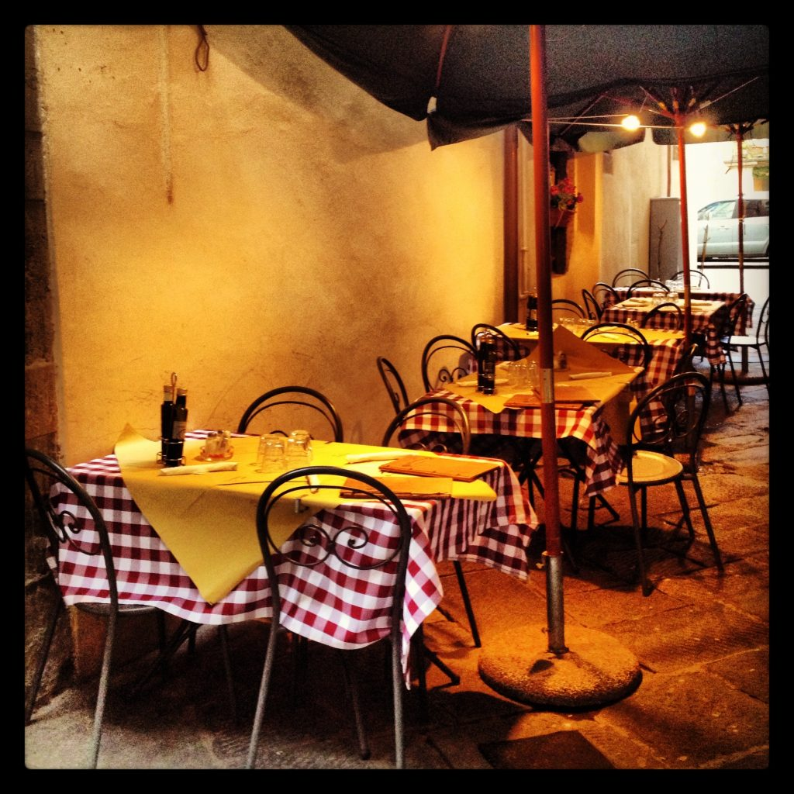

A restaurant on the streets of Lucca in Tuscany
In Italian restaurants, usually the order is made in two phases: the first one includes the choice of the antipasto, primo, and secondo (with a side dish). Then, once you are done eating, the waiter will come back and ask if you wish to have a dessert, coffee or liquor. {This is an excerpt from chapter 3 “Italian cuisine and food establishments” of the eBook “Italy from the Inside. A native Italian reveals the secrets of traveling in Italy”. Buy our eBook on Amazon and leave us a review! If it’s good, you’ll make us happy, if it’s bad, you’ll make us improve. Thank you either way!}